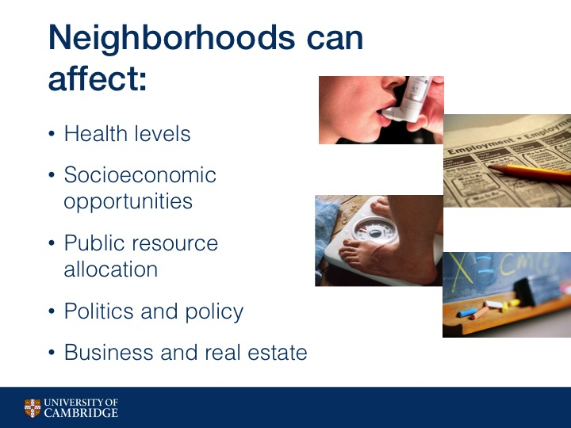

Hoodsquare: Modeling and Recommending Neighborhoods in Location-based Social Networks
Authors
Amy X. Zhang, MIT CSAIL, University of CambridgeAnastasios Noulas, University of Cambridge
Salvatore Scellato, University of Cambridge
Cecilia Mascolo, University of Cambridge
Abstract
Information garnered from activity on location-based social networks can be harnessed to characterize urban spaces and organize them into neighborhoods. In this work, we adopt a data-driven approach to the identification and modeling of urban neighborhoods using location-based social networks. We represent geographic points in the city using spatio-temporal information about Foursquare user check-ins and semantic information about places, with the goal of developing features to input into a novel neighborhood detection algorithm. The algorithm first employs a similarity metric that assesses the homogeneity of a geographic area, and then with a simple mechanism of geographic navigation, it detects the boundaries of a city’s neighborhoods. The models and algorithms devised are subsequently integrated into a publicly available, map-based tool named Hoodsquare that allows users to explore activities and neighborhoods in cities around the world.Finally, we evaluate Hoodsquare in the context of a recommendation application where user profiles are matched to urban neighborhoods. By comparing with a number of baselines, we demonstrate how Hoodsquare can be used to accurately predict the home neighborhood of Twitter users. We also show that we are able to suggest neighborhoods geographically constrained in size, a desirable property in mobile recommendation scenarios for which geographical precision is key.
Presentation
These are the slides and notes from my talk that I gave at SocialCom '13 in Washington, D.C.
My first point, which may seem obvious and trite, is that neighborhoods exist.
Not just in a geopolitical sense, but they exist even in our minds as a way to categorize and
characterize the places we have been to. Let's explore that idea.
Here is a picture of a place in New York you might recognize. Times Square right? What do you think of when you think about what Times Square means to you? (lots of tourists, lots of stores, busy at night-time)
Here's a very different picture - Chinatown, NYC. Lots of Chinese restaurants, Chinese people.

Here is a photo of West Village, NYC - residential, quiet.
Here is East Village, NYC - college students, restaurants and bars.
The crazy thing is that these photos are all taken within 2 miles of each other and some may be only a few blocks away from each other. And yet they are so different and they conjure up such different traits in our minds - such as the type of people, places, and activities that happen in these areas.
The crazy thing is that these photos are all taken within 2 miles of each other and some may be only a few blocks away from each other. And yet they are so different and they conjure up such different traits in our minds - such as the type of people, places, and activities that happen in these areas.
My second point is that neighborhoods are important.
Here is a slide from the London Health Observatory that shows how heath between different subway stops changes drastically. Some may also recall the New Yorker infographic showing the income disparity that occurs while traveling through the different New York subway stops.

It has been shown through research that people living in a city have very different experiences depending on where they lived.
Which neighborhood a person lives or grows up in can affect greatly their health, the socioeconomic opportunities they have,
and the public resources that are available to them. Politics and policy are often very different between neighborhoods,
and also the businesses and venues around them as well as real estate may be very different.
Finally, let's define exactly what we mean by a neighborhood, as it is defined in the literature:
A neighborhood is
"a contiguous geographic area within a larger city, limited in size, and somewhat homogeneous in its characteristics".
Localized.
Small.
Homogeneous.

The Problem.
Current definitions of neighborhoods are often inconsistent and arbitrary.
Here are several neighborhood maps of Manhattan.
The left is from a lifestyle and entertainment magazine, the middle is from an
online yellow pages website, and the right is from the US Census Bureau.
As you can see the different maps are all over the place in terms of where neighborhoods lie and what the neighborhoods actually are.
Let's look at the area one would generally call the Upper East Side. In one map it encompasses the entire west side of Central Park. In the second, it's L shaped and the rest is broken up, and on the right side it is I shaped. We can see that the three maps also have different ideas about where Harlem begins and where UES ends.
Where the boundaries and neighborhoods occur are often decisions made without data, instead made arbitrarily, or even worse, sometimes made to falsely shift boundaries for instance in the case of real estate agencies.
Let's look at the area one would generally call the Upper East Side. In one map it encompasses the entire west side of Central Park. In the second, it's L shaped and the rest is broken up, and on the right side it is I shaped. We can see that the three maps also have different ideas about where Harlem begins and where UES ends.
Where the boundaries and neighborhoods occur are often decisions made without data, instead made arbitrarily, or even worse, sometimes made to falsely shift boundaries for instance in the case of real estate agencies.
In the cases where data is used to gather information to determine neighborhood boundaries, they are:
Rarely updated: For instance, US census tract boundaries have changed very little since its inception in the early 1900s and lots of research and public policy make use of these boundaries.
Difficult to collect data: Involves going door to door, polling people, filling out forms, hiring part-time staff
Not granular: Because of how difficult it is to collect data, we only see snapshots every few years. In fact the Federal Census data is collected only once every 10 years
Rarely updated: For instance, US census tract boundaries have changed very little since its inception in the early 1900s and lots of research and public policy make use of these boundaries.
Difficult to collect data: Involves going door to door, polling people, filling out forms, hiring part-time staff
Not granular: Because of how difficult it is to collect data, we only see snapshots every few years. In fact the Federal Census data is collected only once every 10 years
Solving the problem:
Use Location-Based Social Networks
Benefits of online social network data: lots of data, easy to collect, available in real time, semantically enriched.
Benefits of online social network data: lots of data, easy to collect, available in real time, semantically enriched.
There are some challenges with using online social network data as well.
There's lots of data, so need to use algorithms that can parse the data quickly. Data may not be representative, so we focus on highly urban areas.
A neighborhood is an area of relatively high local homogeneity. How do we find these using location-based social network data?
Before we can answer that question, how do we even characterize physical spaces?
There's lots of data, so need to use algorithms that can parse the data quickly. Data may not be representative, so we focus on highly urban areas.
A neighborhood is an area of relatively high local homogeneity. How do we find these using location-based social network data?
Before we can answer that question, how do we even characterize physical spaces?
The data set we use is gathered from Foursquare by way of public Twitter profile information, which we gathered using the Twitter API.
This encompasses 34 million checkins by 900 thousand users in 4 million places.
For this presentation, I'm mostly going to focus on the cities of New York, London, and San Francisco. But on the website, we have 11 additional more cities throughout the world that we have some results for.
So from Foursquare, we know the specific people that check in to that geographic place.
There are many characteristics of people that can differentiate areas, such as ethnicity and occupation.
We choose to focus on a characteristic that is both very descriptive of different areas and one that we
can reasonably estimate using Foursquare data and that is local versus tourist visitors.
Another characteristic that often came up in our exercise at the beginning was time. Is this area busy around noon time? Or does it get busy at night? We can find this out because we know the time of the day that the check-in occurs.
Finally types of venues. From Foursquare data we also know the specific venues that are at a geographic place. But we also know the venue categories they belong to, for instance Bar, Coffee Shop, or Chinese restaurant.
Another characteristic that often came up in our exercise at the beginning was time. Is this area busy around noon time? Or does it get busy at night? We can find this out because we know the time of the day that the check-in occurs.
Finally types of venues. From Foursquare data we also know the specific venues that are at a geographic place. But we also know the venue categories they belong to, for instance Bar, Coffee Shop, or Chinese restaurant.
We determined that a person is a local of a city if greater than 50% of their check-ins take place within a city.
Here we can see a map of London that show whether more tourists check in (blue) or more locals check in (red). I've pointed out some major tourist locations on the map.
As you can see, areas vary greatly in the number of tourists versus locals they see, even places very close to each other geographically.
We felt that the differences between an area that had its maximum number of checkins at noon versus 1PM were not that important. So instead we devised a way to split up the day into different buckets in a holistic way
We plot the average number of checkins per hour across London, New York, and San Francisco. We see that all three cities experience spikes in activity around meal time, which makes sense since many Foursquare users like to check in to food related venues.
For that reason, we organize checkins across time into different time categories, including meal times, and mark an area as one or more of these categories if the hour which it has the most checkins is within the category's range.
Besides knowing the particular venues that are in a geographic area, we know the place category of each venue, such as Coffee Shop or Korean Restaurant, which is crowdsourced from Foursquare.
In these photos you can see the differences in geographic areas in terms of both place category and time. The colors represent high level place categories such as Food or Shops or Nightlife, with larger circles meaning greater popularity.
For example: As would be expected, Nightlife in magenta becomes much more prevalent at night time. At noon, we see more Food places in yellow, and in the morning we see more work in blue and education in black.
So now we can characterize areas but how do we know if a characteristic is a defining one for an area?
Let me elaborate on the reasoning behind that question a little bit.
We use the phrase, "shopping district", or "theatre district", often to describe certain parts of town. But just because an area has a lot of shops, can we call it a "shopping district"? I'm sure there are shops throughout Manhattan, but it wouldn't be useful to define a shopping district that is the entirety of Manhattan.
With that in mind, it doesn't make sense to characterize areas as an area for shopping just because there are shops there. Even if we know there are X shops in an area, or even X% of an area is comprised of shops, it's not a useful or defining characteristic of an area if all the surrounding areas also have X% shops.
So what do we mean when we call certain parts of town the "shopping district"? What we actually mean when we say this is a small area with a high density of shops relative to other surrounding areas.
So what we're actually interested in finding is highly dense pockets for each characteristic, or as we'll call it: hotspots.
To find highly dense pockets we use density-based clustering, which is good because unlike partitioning algorithms, you don't need to know number of clusters beforehand and not all points must be contained within a cluster. So if an area does not have relative high density for a characteristic, it's not in a cluster.
We choose the density based clustering algorithm OPTICS because it can deal with finding clusters varying levels of local density, which is necessary in cities that do not have a uniform number of visitors.

How OPTICS does this is by creating a reachability plot, created by ordering points based on their distance to each other so closer points are grouped together on the reachability plot and form valleys.
Higher valleys have greater distances between points, which means they are less dense. So one way to find clusters is to just pick a threshold. But different thresholds lead to different clusters.
So to find clusters we use an automatic clustering algorithm.
We find local maximums within the plot and partition the plot to form a hierarchical tree.
Then we gather the leaves off of the tree to get our locally dense hotspots.
And of course there is a bit of fine tuning to get this process to give us appropriate results: clusters that aren't so big that they are no longer useful. For instance, we do set a maximum average reachability distance to be acceptable to be a hotspot. So in this case, the leaf with the highest average reachability distance may be not dense enough to be acceptable.
And of course there is a bit of fine tuning to get this process to give us appropriate results: clusters that aren't so big that they are no longer useful. For instance, we do set a maximum average reachability distance to be acceptable to be a hotspot. So in this case, the leaf with the highest average reachability distance may be not dense enough to be acceptable.
Here's an example of the algorithm working on only the Chinese Restaurants in Manhattan. You can see how the area commonly known as Chinatown is highlighted by the algorithm.
Another way to put it: how can we tell if an area is homogeneous relative to its neighboring areas?
To do that, we've come up with an equation that seeks to calculate how homogeneous an area is with respect to its surrounding areas.
We call this number an area's Homogeneity Index or H-Index.
First split the city into small grid cells: 100m by 100m.
Then for each grid cell, compute a vector for that grid encapsulating the characteristics present at that grid.
So since we have hotspots for each characteristic, a possible vector would have each characteristic as a dimension
and the value of that dimension to be the presence of a hotspot.
Then, the H_index of cell p given a radius r find all cells within radius r of p, call these cells Npr. Compare the vector of p to vector of each cell in Npr, in this equation we use cosine similarity as our comparison, and adding up these comparisons and normalizing by number of cells in Npr.
Then, the H_index of cell p given a radius r find all cells within radius r of p, call these cells Npr. Compare the vector of p to vector of each cell in Npr, in this equation we use cosine similarity as our comparison, and adding up these comparisons and normalizing by number of cells in Npr.
We played with different values for r in H-Index.
You can see how at 400meters, we get small areas with high homogeneity.
As we increase the value of r, we begin to see larger areas with high relative homogeneity.
OK so now we have a value of H-Index for each cell in a city. How do you actually find polygon neighborhoods? As can been seen from the heatmaps from the previous slide, there are many different local maximums, so simply setting a hard threshold for H-Index and getting all the resulting polygons will only find some of the peaks.
Instead we employ a moving threshold.
First we decide on a min and max size that we want a neighborhood to be in terms of number of cells.
Then, we set our threshold to be 0. We gather all the cells that have H-Index greater than 0 (so all of them) and pick out the groups that have between min and max size.
A group is a group of cells where any cell can reach any other cell in the group by traversing N,S,E, or W within the group. See picture.
Then we increment our threshold slightly and repeat with the remaining cells not assigned to a neighborhood. We stop when the H-Index reaches 1.
And here, finally are the resulting neighborhoods from the previous algorithm, done on the heatmaps of New York with radius of 400m and radius of 1200m.
This is a screenshot of hoodsquare.org, built with leaflet.js. You can not only see the neighborhoods but also the different hotspots for each characteristic.
Here is a screenshot zoomed into Tokyo with some of the hotspots highlighted.
Ok so now we have some different neighborhood boundaries. What can we do with them? And is there any way to evaluate our neighborhood boundaries at this task versus other versions of neighborhood boundaries?
One application is for us to recommend neighborhoods to people. Here, we took all the Twitter user profile information of the people that checked into the neighborhood commonly named "SoHo" to create this word cloud.
Below is a word cloud formed from Twitter user profiles of users that checked in to a neighborhood near Columbia University. You can see that there are some differences between the two word clouds.
The SoHo word cloud references many career-related terms such as marketing, PR, entrepreneur, producer, and more. On the other hand the Columbia word cloud has student related terms such as student, international, Columbia, doctoral, etc.
So then, our task is, given the Twitter profile information of a user, recommend neighborhoods for him or her to visit, where a neighborhood is represented as the words from all the profiles of the users that visit the neighborhood.
We compare the neighborhood boundaries we defined with radius 400m also known as HoodSquare Small and with radius 800m also known as HoodSquare Large against the following baselines.
First a simply partitioning of the city into grid cells of 800m by 800m.
Second, the latest U.S. Census tract boundaries.
Third, a set of boundaries taken from Zillow, an online real estate company.
And last, a set of boundaries produced by Livehoods, another algorithmic approach using spectral clustering on the network of Foursquare places in the city.
A point to make about this task is that the size of the area that is recommended is important. It would be difficult for a user to navigate a neighborhood that is sprawling. Without taking size into consideration, this task would be trivial. For instance if one neighborhood is the size of Manhattan, the accuracy of recommending this neighborhood would be 100%.
To give you an idea of how the neighborhoods between the various baselines and hoodsquare small and hoodsquare large compare in terms of size, here is their probability density functions for area size. The grid baseline has a uniform area of .64 km squared so it's not shown here.
As you can see, Zillow, Census, and Livehoods have a great disparity in neighborhood size, with some neighborhoods that are quite large, reaching near 10 km squared, definitely a size not navigable by foot.
In contrast, Hoodsquare S stays around 0.1 km sq while Hoodsquare L stays near 1 km sq, both reasonable sizes to cover on foot.
So we recommend to our test users the top N most similar neighborhoods given a user's profile information, where N goes from 1 to 25.
We look at two different evaluation metrics:
accuracy@N which is the percentage where the system recommended the correct neighborhood in the N sized list.
Then there's also AreaCost@N, which is the average total size of the recommended area (so all the neighborhoods' areas added up) and normalized by the total area of the city.
We can see that several of the sets of neighborhoods perform well in terms of Accuracy@N. However, the HoodSquare neighborhoods are the only ones that have both relatively high accuracy coupled with low total area recommended, even as the recommendation list size grows.
- Characterized places in a city by place, time, tourist/local, and found hotspots for each characteristic
- Used a homogeneity index to indicate areas of high relative homogeneity and employed an algorithm to find neighborhood boundaries
- Integrated neighborhoods and hotspots into an online visualization
- Evaluated neighborhoods using a neighborhood recommendation application against several baselines
- Used a homogeneity index to indicate areas of high relative homogeneity and employed an algorithm to find neighborhood boundaries
- Integrated neighborhoods and hotspots into an online visualization
- Evaluated neighborhoods using a neighborhood recommendation application against several baselines
Email me with questions or comments - axz at mit.edu